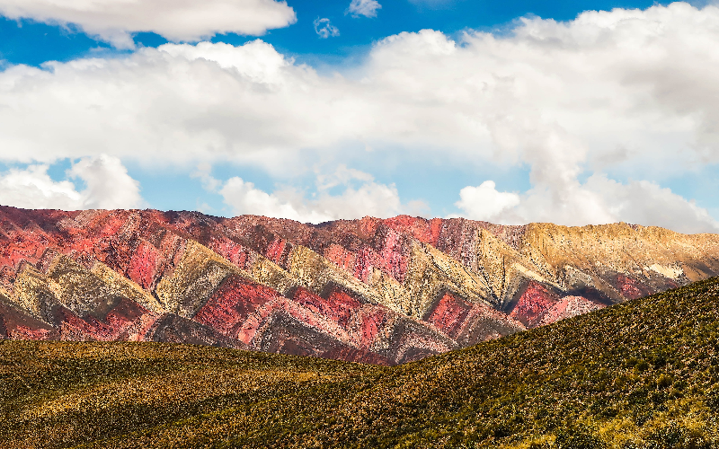
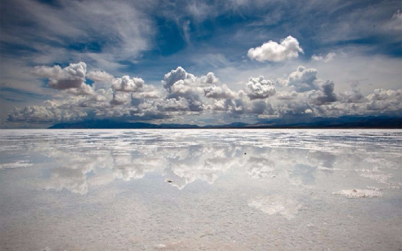
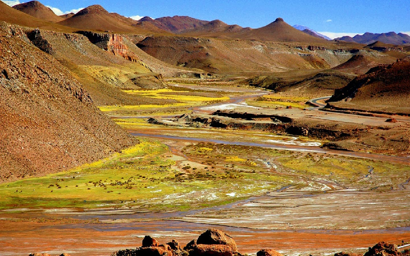
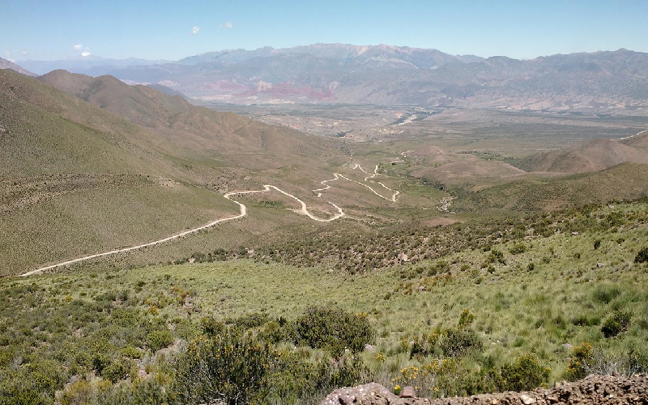

La Puna (Jujuy)
Sus 3.800 metros de altitud promedio la convierte en la segunda altiplanicie de la Tierra detrás del Tibet. Desde Jujuy hasta el norte de San Juan se extienden sus 8.640.000 hectáreas salpicadas de salinas y lagunas salobres de escasa profundidad.
Presenta mares interminables de sal, que hacen parecer que el tiempo se detiene, quebradas con formas y colores increíbles.
(en las imágenes se encuentra la transformación (:hover))



